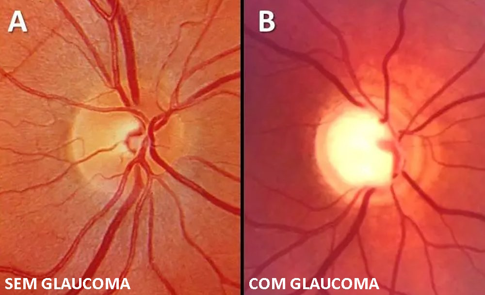
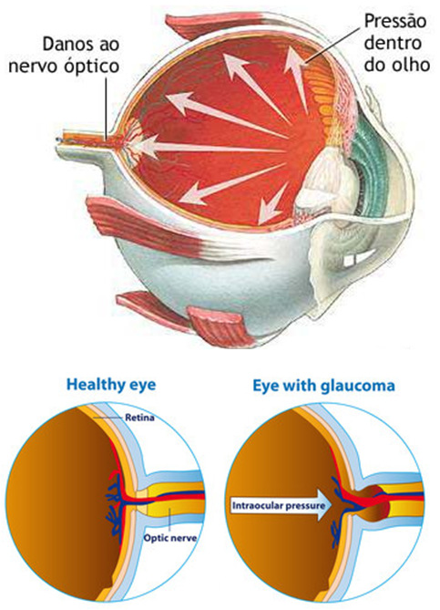
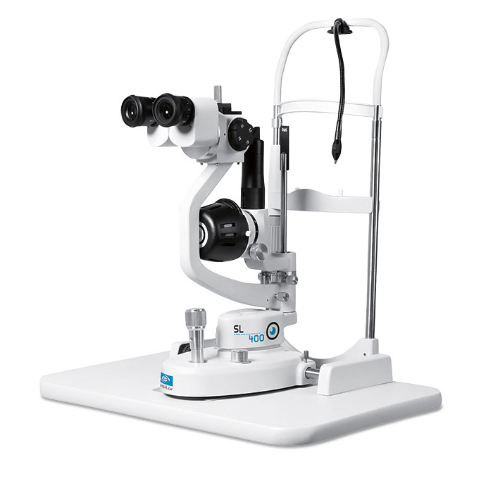
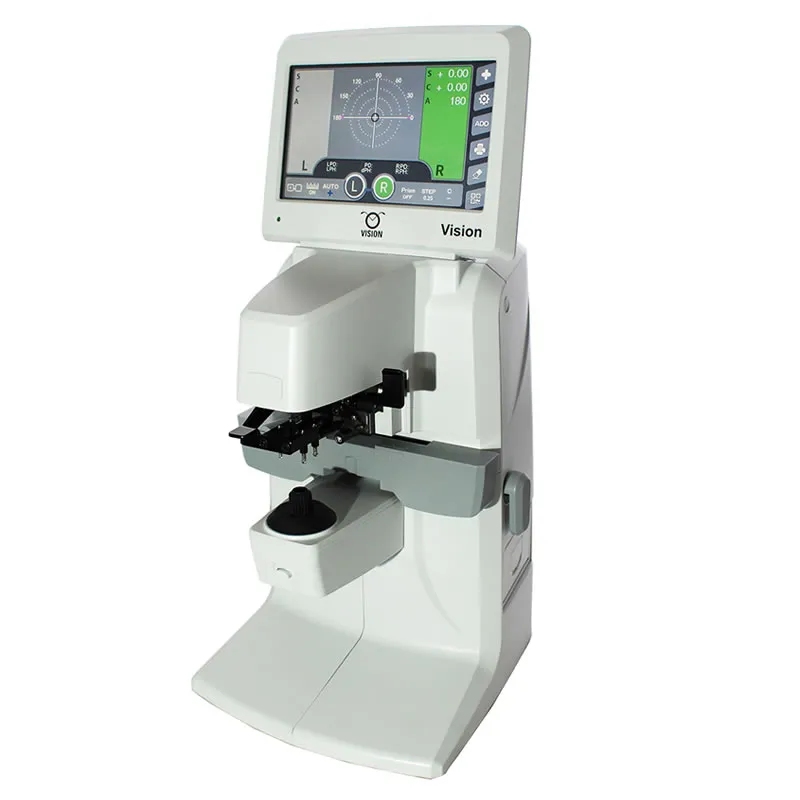
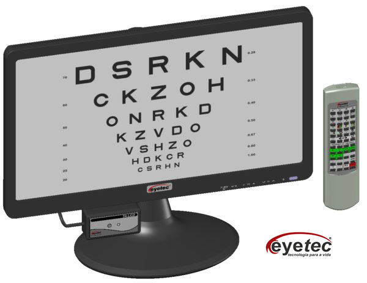
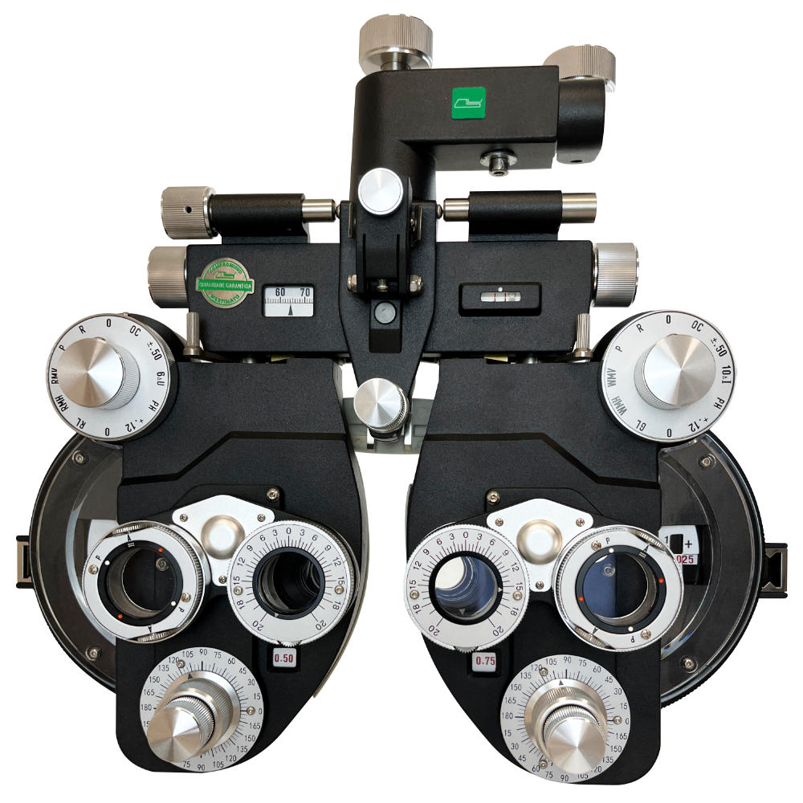

Informações rápidas
Tema
GLAUCOMA
Área
Biologia e Saúde
Estudo
Sistema Visual
FLASHCARDS
O que é?
O glaucoma é uma doença que causa danos ao nervo óptico, podendo comprometer a visão.
Causas
Relacionada principalmente ao aumento da pressão dentro do olho.
Tipos
Existem 4 tipos Principais,glaucoma de: ângulo aberto, ângulo fechado, secundário e congênito.
Sintomas
Muitas vezes começa silenciosamente, por isso o acompanhamento médico é importante.
Diagnóstico
Exames oftalmológicos ajudam a identificar alterações na visão.
Tratamento
O tratamento pode envolver acompanhamento médico e medicamentos indicados pelo especialista.
Galeria


Como o glaucoma pode afetar a visão
IMAGENS DA ROBOTICA
E Algumas de paisagem (bem bonitas)

Oftalmológicos
Não existe atualmente um colírio que cure o glaucoma ou recupere a visão já perdida.
O tratamento busca principalmente reduzir a pressão dentro do olho e impedir/desacelerar novos danos ao nervo óptico.
👁️ Principais colírios usados
| Tipo | Princípios ativos | Como atua |
|---|---|---|
| Prostaglandinas | latanoprosta, bimatoprosta, travoprosta | Aumentam a drenagem do líquido do olho |
| Betabloqueadores | timolol | Diminuem a produção de líquido |
| Inibidores da anidrase carbônica | dorzolamida, brinzolamida | Diminuem a produção de líquido |
| Agonistas alfa-adrenérgicos | brimonidina | Diminuem a produção e podem aumentar a drenagem (dois em 1) |
| Mióticos | pilocarpina | Ajudam na drenagem do líquido |
Esses medicamentos são prescritos pelo oftalmologista, pois o tratamento depende do tipo de glaucoma, da pressão ocular e da situação do nervo óptico.
Se os colírios não forem suficientes, o oftalmologista pode considerar tratamento a laser ou cirurgia para controlar a pressão ocular.
Galeria




